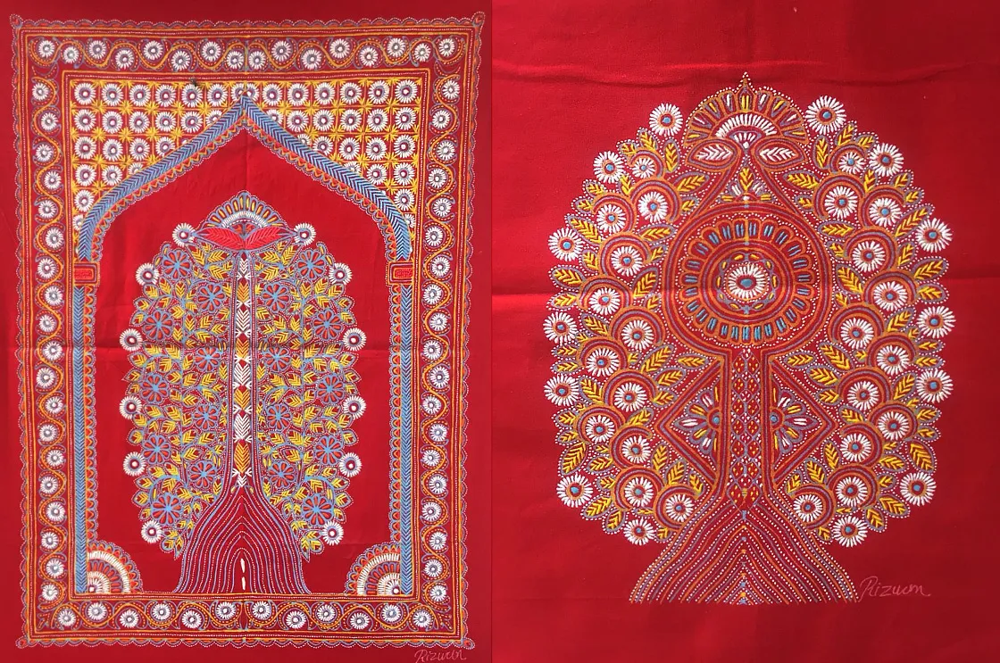
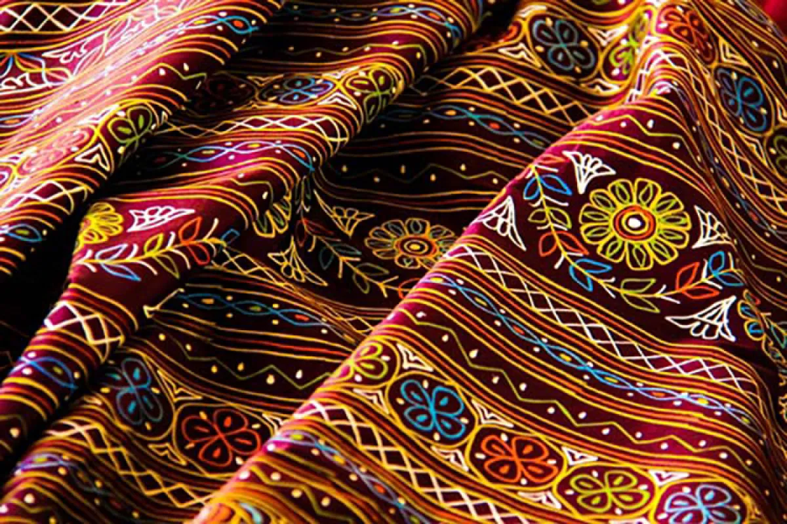
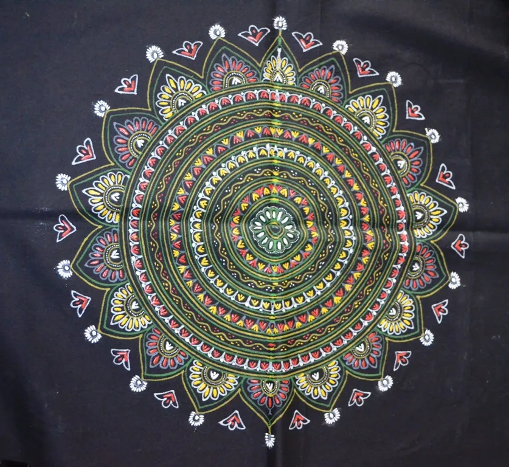

Rogan Art is perhaps the rarest painting technique on Earth — practiced by only one family in the world, the Khatri family of Nirona village in Kutch. The word "Rogan" comes from Persian, meaning oil-based. This 400-year-old craft involves painting on fabric using a thick paste made from castor oil boiled for 48 hours. By the 1980s, only one practitioner remained — Abdul Gafur Khatri — who single-handedly revived this dying art. Today, his work hangs in the finest museums and has been gifted to world leaders including Barack Obama. UNESCO recognizes Rogan Art as an intangible cultural heritage.
Who Should Visit
- Art Collectors: Own a piece of the world's rarest art form.
- Culture Enthusiasts: Meet a living legend and Padma Shri awardee.
- Photography Lovers: Document a craft found nowhere else on Earth.
- Heritage Travelers: Witness UNESCO-recognized living heritage.
How to Visit
- Nirona Village: 45 km from Bhuj. The only place to see authentic Rogan Art.
- Khatri Workshop: The family welcomes visitors for demonstrations.
- Best Time: October to March for pleasant weather.
- Duration: 2-3 hours to see demonstrations and shop.
The Unique Process
A technique found nowhere else in the world

Making the Paint
Castor oil is boiled for 48 hours continuously until it becomes a thick, sticky paste. Natural pigments are mixed in to create vibrant colors.

The Iron Rod
No brushes are used. The artisan uses a metal stylus (rod) to pick up tiny amounts of paint and manipulates it with flowing hand movements.

Mirror Symmetry
The design is painted on half the fabric, then folded to create a perfectly symmetrical mirror image — a signature of Rogan Art.
Tree of Life
The most iconic Rogan design. Symbolizing eternal life and growth, this intricate motif can take weeks to months to complete.
Did You Know?
Only One Family
The Khatri family of Nirona is the sole practitioner of this art worldwide.
Gift to Obama
A Rogan Art piece was gifted to President Obama in 2015 as a state gift.
48 Hours Boiling
The castor oil paint requires continuous boiling for two full days.
Never Fades
The oil-based paint never fades and lasts for generations.
Traditional Motifs
- Tree of Life: The most iconic and sacred Rogan design.
- Peacocks & Parrots: Symbols of beauty and grace.
- Floral Medallions: Intricate circular flower patterns.
- Paisley Motifs: Classic curved teardrop shapes.
- Geometric Borders: Detailed framing patterns.
Abdul Gafur Khatri
- 8th Generation: Carrying forward 400 years of tradition.
- Padma Shri: India's 4th highest civilian award.
- UNESCO Award: Award of Excellence for craft.
- Craft Reviver: Single-handedly saved the art from extinction.
- Living Legend: His sons now continue the legacy.
Buying Tips
- Visit Nirona: The only authentic source for Rogan Art.
- Expect Premium Prices: Rarity and skill command high prices.
- Authenticity Certificate: Each piece comes with certification.
- Custom Orders: Possible but require months of wait time.
Price Range
- Bookmarks & Coasters: ₹500 - ₹2,000
- Small Wall Hangings: ₹2,000 - ₹10,000
- Large Art Pieces: ₹20,000 - ₹50,000
- Masterpieces: ₹50,000+
Explore Other Crafts
Ajrakh
Ancient block printing technique using natural dyes like indigo and madder.
Bandhani
Traditional tie-dye art with thousands of hand-tied knots.
Kutch Weaving
Vibrant handloom textiles with intricate extra-weft designs.
Mirror Work
Sparkling embroidery with tiny mirrors creating dazzling patterns.